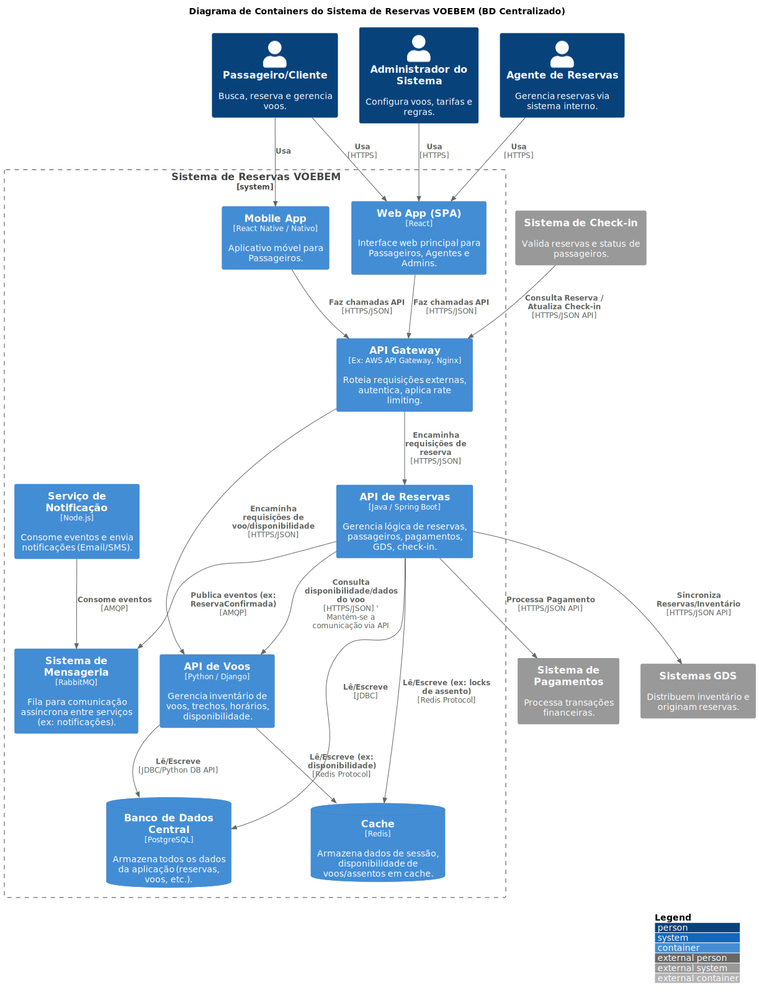
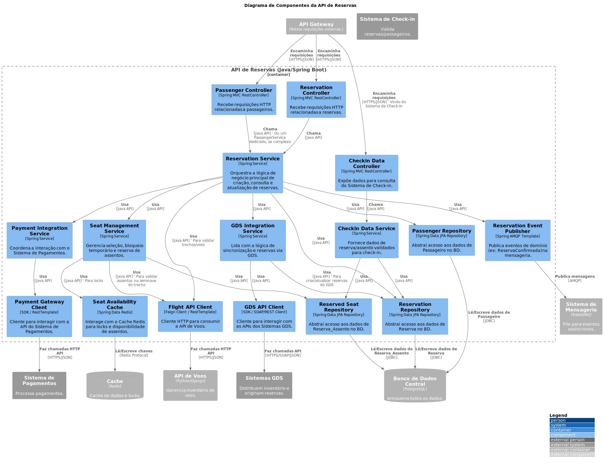
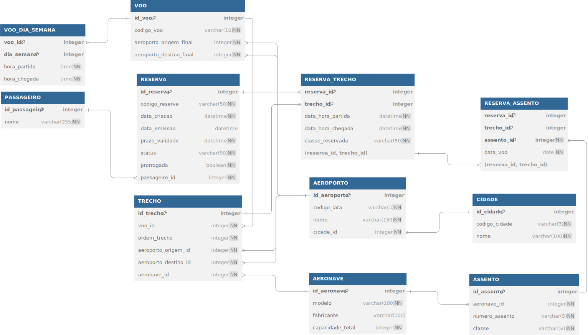

PONTIFÍCIA UNIVERSIDADE CATÓLICA DE MINAS GERAIS
PUC Minas Virtual
ATIVIDADE DE NIVELAMENTO
Proposta de Solução para o Sistema VOEBEM
Frederyck Baleeiro Espinheiro Sales
Castanhal - PA
Belo Horizonte
Abril de 2025.
NIVELAMENTO SRE
Sumário
NIVELAMENTO SRE
- Arquitetura do Sistema - Diagrama C4
- Estratégia de Deploy e Resiliência
- Plano de Melhoria da Confiabilidade e Percepção do Cliente
1. Arquitetura do Sistema - Diagrama C4
Para ilustrar claramente a arquitetura proposta para o Sistema VOEBEM, utilizamos a metodologia C4 Model. Esta abordagem fornece diferentes níveis de detalhe, desde uma visão geral do contexto até a estrutura interna dos componentes principais, facilitando a compreensão por diferentes públicos (técnicos e de negócio).
-
Nível 1 (Contexto):
Este diagrama mostra o Sistema de Reservas VOEBEM em seu contexto, identificando os principais usuários e as integrações com sistemas externos essenciais para sua operação.

-
Usuários (Personas):
- Passageiro/Cliente: Pessoa que busca, reserva e gerencia voos através dos canais digitais (Website/App Mobile).
- Agente de Reservas (Funcionário VOEBEM): Funcionário que utiliza o sistema internamente para criar, modificar e gerenciar reservas em nome dos clientes.
- Administrador do Sistema (Funcionário VOEBEM): Funcionário responsável pela configuração de voos, tarifas, regras de negócio e gerenciamento geral do sistema.
-
Sistema Principal:
- Sistema de Reservas VOEBEM (Software System): A aplicação central que gerencia todo o inventário de voos, trechos, assentos, processa reservas e fornece informações aos usuários e sistemas externos.
-
Sistemas Externos:
- Sistema de Pagamentos (External System): Serviço externo responsável pelo processamento seguro de transações financeiras para a emissão de bilhetes. Interage com o Sistema VOEBEM para autorizar e confirmar pagamentos.
- Sistema de Check-in (External System): Sistema utilizado nos aeroportos (ou online) para validar reservas, confirmar a presença do passageiro e atribuir/confirmar assentos antes do embarque. Interage com o Sistema VOEBEM para consultar dados da reserva/assento e atualizar o status de check-in.
- Sistemas GDS (Global Distribution Systems) (External System): Plataformas globais (Exemplo: Amadeus, Sabre) que distribuem o inventário de voos da VOEBEM para agências de viagens e outros canais. Interage com o Sistema VOEBEM para consultar disponibilidade, criar reservas (originadas externamente) e sincronizar informações.
-
Nível 2 (Container):
Este diagrama detalha os principais blocos de construção (containers) do Sistema de Reservas VOEBEM, suas responsabilidades, tecnologias e como eles interagem, utilizando um banco de dados centralizado conforme requisito.

Containers Principais:
-
Web App (SPA) (Container):
- Descrição: Interface web principal acessada via navegador.
- Tecnologia: React.
- Responsabilidade: Fornecer a interface do usuário para Passageiros, Agentes de Reservas e Administradores realizarem suas tarefas (consultas, reservas, gerenciamento).
- Interage com: API Gateway (via HTTPS/JSON).
-
Mobile App (Container):
- Descrição: Aplicativo móvel nativo ou híbrido.
- Tecnologia: React Native / Nativo (iOS/Android).
- Responsabilidade: Fornecer uma interface otimizada para Passageiros em dispositivos móveis.
- Interage com: API Gateway (via HTTPS/JSON).
-
API Gateway (Container):
- Descrição: Ponto único de entrada para todas as requisições externas das interfaces (SPA, Mobile App) e de sistemas externos (Check-in).
- Tecnologia: Exemplo: AWS API Gateway, Nginx, Kong.
- Responsabilidade: Roteamento de requisições para os serviços backend apropriados, autenticação/autorização inicial, aplicação de rate limiting, agregação leve de respostas (opcional).
- Interage com: Web App, Mobile App, Sistema de Check-in, API de Reservas, API de Voos.
-
API de Reservas (Container):
- Descrição: Microsserviço backend focado no domínio de reservas.
- Tecnologia: Java / Spring Boot.
- Responsabilidade: Gerenciar todo o ciclo de vida das reservas (criação, consulta, cancelamento, prorrogação), dados de passageiros, orquestrar interações com pagamento, GDS e check-in, gerenciar reserva de assentos.
- Interage com: API Gateway, Banco de Dados Central, API de Voos, Cache, Sistema de Mensageria, Sistema de Pagamentos, Sistemas GDS.
-
API de Voos (Container):
- Descrição: Microsserviço backend focado no domínio de inventário de voos.
- Tecnologia: Python / Django.
- Responsabilidade: Gerenciar informações sobre voos, trechos, horários, aeroportos, aeronaves e calcular/consultar disponibilidade de voos e assentos.
- Interage com: API Gateway, Banco de Dados Central, Cache, API de Reservas.
-
Serviço de Notificação (Container):
- Descrição: Serviço assíncrono para envio de notificações.
- Tecnologia: Node.js.
- Responsabilidade: Consumir eventos do Sistema de Mensageria (Exemplo:
ReservaConfirmada, PrazoExpirando) e enviar notificações aos usuários via canais apropriados (Email, SMS - integração com serviços externos específicos não mostrada neste nível).
- Interage com: Sistema de Mensageria.
Containers de Dados e Mensageria:
-
Banco de Dados Central (Database Container):
- Descrição: Banco de dados relacional centralizado que armazena todos os dados da aplicação.
- Tecnologia: PostgreSQL.
- Responsabilidade: Armazenar de forma persistente e transacional os dados de reservas, passageiros, voos, trechos, aeroportos, aeronaves, assentos, etc.
- Acessado por: API de Reservas, API de Voos.
-
Cache (Database Container):
- Descrição: Armazenamento de dados em memória para acesso rápido.
- Tecnologia: Redis.
- Responsabilidade: Acelerar consultas frequentes (Exemplo: disponibilidade de voos/assentos), armazenar dados de sessão (opcional), gerenciar locks temporários (Exemplo: durante seleção de assento).
- Acessado por: API de Reservas, API de Voos.
-
Sistema de Mensageria (Container):
- Descrição: Broker de mensagens para comunicação assíncrona.
- Tecnologia: RabbitMQ.
- Responsabilidade: Desacoplar a comunicação entre serviços, permitindo que eventos sejam publicados (pela API de Reservas) e consumidos (pelo Serviço de Notificação) de forma independente e resiliente.
- Acessado por: API de Reservas, Serviço de Notificação.
-
Nível 3 (Componentes - Exemplo para API de Reservas):
Este diagrama detalha a estrutura interna do container "API de Reservas", mostrando seus principais componentes lógicos e como eles colaboram para realizar as funcionalidades de reserva e interagir com dependências externas.

Componentes Principais da API de Reservas:
-
Controllers (ReservationController, PassengerController, CheckinDataController):
- Tecnologia: Spring MVC RestController.
- Responsabilidade: Receber requisições HTTP da API Gateway, validar entradas básicas e delegar para os serviços apropriados. O
CheckinDataController expõe endpoints específicos para consulta pelo Sistema de Check-in.
-
Services (ReservationService, SeatManagementService, PaymentIntegrationService, GdsIntegrationService, CheckinDataService):
- Tecnologia: Spring Service.
- Responsabilidade: Contêm a lógica de negócio principal.
ReservationService: Orquestra o fluxo de criação, consulta, atualização de reservas, validações de regras de negócio.SeatManagementService: Gerencia a lógica de seleção, bloqueio temporário (usando cache) e confirmação de assentos.PaymentIntegrationService: Coordena a comunicação com o PaymentGatewayClient para processar pagamentos.GdsIntegrationService: Lida com a lógica de receber/enviar dados de/para os Sistemas GDS através do GdsApiClient.CheckinDataService: Fornece dados consolidados e validados sobre a reserva e assento para o CheckinDataController.
-
Repositories (ReservationRepository, PassengerRepository, ReservedSeatRepository):
- Tecnologia: Spring Data JPA Repository.
- Responsabilidade: Abstrair o acesso (leitura/escrita) aos dados das entidades correspondentes no
Banco de Dados Central.
-
Clients (FlightApiClient, PaymentGatewayClient, GdsApiClient):
- Tecnologia: Feign Client / RestTemplate / SDKs específicos.
- Responsabilidade: Encapsular a comunicação via rede com outros containers ou sistemas externos.
FlightApiClient: Comunica-se com a API de Voos para obter informações de voos, trechos e validar disponibilidade/assentos.PaymentGatewayClient: Interage com o Sistema de Pagamentos externo.GdsApiClient: Interage com os Sistemas GDS externos.
-
Messaging (ReservationEventPublisher):
- Tecnologia: Spring AMQP Template.
- Responsabilidade: Publicar eventos de domínio significativos (Exemplo:
ReservaConfirmada, PagamentoFalhou) no Sistema de Mensageria para processamento assíncrono (Exemplo: notificações).
-
Caching (SeatAvailabilityCache):
- Tecnologia: Spring Data Redis.
- Responsabilidade: Interagir com o
Cache (Redis) para operações específicas, como gerenciamento de locks distribuídos durante a seleção de assentos para evitar concorrência.
Destaques Obrigatórios:
- Escalabilidade:
- Horizontal: Utilização de múltiplos containers/instâncias para os serviços (Frontend, API Gateway, Serviços Backend) gerenciados por orquestradores (Kubernetes, AWS ECS) ou grupos de autoescalonamento (Auto Scaling Groups). O Banco de Dados pode escalar leituras com réplicas.
- Vertical: Aumento de recursos (CPU/Memória) das instâncias/containers conforme necessário (menos preferível para serviços stateless).
- Balanceamento de Carga: Uso de Load Balancers (Exemplo: AWS ELB, Nginx) na frente da API Gateway e dos serviços backend para distribuir o tráfego entre as instâncias disponíveis.
- Alta Disponibilidade:
- Deploy das instâncias/containers em múltiplas Zonas de Disponibilidade (AZs) na nuvem.
- Uso de bancos de dados gerenciados com replicação multi-AZ e failover automático.
- Implementação de Health Checks para que o Load Balancer e o orquestrador removam instâncias não saudáveis.
2. Estratégia de Deploy e Resiliência
Esta seção detalha as estratégias propostas para garantir entregas de software frequentes, confiáveis e com baixo risco para o Sistema VOEBEM, abordando o pipeline de CI/CD, a metodologia de deploy em produção e o plano de rollback.
2.1 Pipeline de CI/CD (Integração Contínua / Entrega Contínua)
Propõe-se um pipeline de CI/CD robusto para automatizar o processo de build, teste e deploy dos diferentes containers (microsserviços, frontend) do sistema, conforme ilustrado abaixo.
2.2 Estratégia de Deploy
Considerando a criticidade do sistema e a necessidade de minimizar riscos e downtime, a estratégia de deploy recomendada é Blue/Green Deployment, cujo fluxo é apresentado no diagrama a seguir.
-
Justificativa:
- Zero Downtime: Transição suave de tráfego.
- Testes em Produção Isolados: Validação da nova versão sem impacto no usuário.
- Rollback Instantâneo: Reversão rápida em caso de problemas.
- Simplicidade Conceitual: Fluxo claro para deploy e rollback.
-
Funcionamento (Ilustrado no Diagrama):

- Ambiente Blue Ativo: Versão atual (v1) recebe o tráfego.
- Provisionamento Green: Nova versão (v2) é implantada em um ambiente idêntico (Green).
- Testes no Green: Validação da v2 no ambiente Green isolado.
- Switch de Tráfego: Se os testes passarem, o tráfego é direcionado para o ambiente Green (v2).
- Monitoramento do Green: A v2 é monitorada em produção.
- Estabilização ou Rollback: Se a v2 estiver estável, o ambiente Blue (v1) é desativado. Se problemas críticos forem detectados, o tráfego é revertido imediatamente para o Blue (v1) (Rollback).
- Desativação do Blue: Após confirmação da estabilidade do Green, o ambiente Blue é liberado.
-
Benefícios para VOEBEM: Essa abordagem minimiza o risco de impacto ao usuário durante atualizações e permite reversões imediatas caso surjam problemas inesperados, garantindo assim a continuidade das operações críticas de reserva e a confiança do cliente.
2.3 Estratégia de Rollback
A estratégia de rollback é uma parte intrínseca do fluxo Blue/Green, como visualizado no diagrama anterior.
3. Plano de Melhoria da Confiabilidade e Percepção do Cliente
A confiabilidade e a percepção positiva do cliente são cruciais para o sucesso do VOEBEM. Este plano descreve as práticas de Engenharia de Confiabilidade de Sites (SRE - Site Reliability Engineering) que propomos para alcançar e manter altos níveis de serviço, alinhando a operação técnica com a experiência do cliente.
3.1 Monitoramento e Observabilidade
Uma estratégia robusta de monitoramento e observabilidade é fundamental para entender o comportamento do sistema, detectar problemas proativamente e garantir que as metas de negócio sejam atendidas. Propõe-se uma abordagem baseada nos três pilares da observabilidade: métricas, logs e traces.
-
SLIs (Service Level Indicators) Chave: Indicadores quantitativos que medem aspectos específicos do serviço. Exemplos para VOEBEM:
| Categoria |
SLI (Indicador) |
| Disponibilidade |
% de requisições bem-sucedidas (HTTP 2xx/3xx) na API Gateway (endpoints chave) |
| Disponibilidade |
% de requisições bem-sucedidas nas APIs (Reservas, Voos) |
| Latência |
Tempo de resposta (p95, p99) para busca de voos na API Gateway |
| Latência |
Tempo de resposta (p95) para criação de reserva na API de Reservas |
| Taxa de Erros |
% de requisições com erro (HTTP 5xx) nas APIs (Gateway, Reservas, Voos) |
| Taxa de Erros |
Taxa de falhas na integração com Sistema de Pagamentos |
| Taxa de Erros |
Taxa de erros na publicação/consumo de mensagens (Sistema de Mensageria) |
| Saturação |
Uso de CPU/Memória dos containers |
| Saturação |
Uso de conexões do banco de dados |
| Saturação |
Profundidade da fila no Sistema de Mensageria |
-
SLOs (Service Level Objectives): Metas claras e mensuráveis para os SLIs mais críticos, definindo o nível de serviço esperado. Exemplos:
| SLI Referente |
Exemplo de SLO (Meta) |
Janela |
| Disponibilidade API Gateway (Busca/Reserva) |
>= 99.9% de requisições bem-sucedidas |
Mensal |
| Latência Busca de Voos (p95) |
< 800ms |
Contínua |
| Latência Criação de Reserva (p95) |
< 1500ms |
Contínua |
| Taxa de Erros API Reservas (5xx) |
< 0.1% |
Mensal |
(Nota: Estes são exemplos iniciais e devem ser refinados com base em dados históricos e necessidades de negócio).
-
Ferramentas Propostas:
| Pilar |
Ferramenta(s) Proposta(s) |
Principal Responsabilidade |
| Métricas |
Prometheus + Grafana |
Coleta e Visualização de Métricas (SLIs, SLOs, Saúde) |
| Logs |
Fluentd/Bit + Loki + Grafana (ou ELK Stack) |
Coleta, Agregação e Consulta de Logs |
| Tracing |
Jaeger + OpenTelemetry + Grafana |
Coleta e Visualização de Traces Distribuídos |
| Alertas |
Alertmanager + PagerDuty/Opsgenie |
Definição de Regras de Alerta e Notificação On-Call |
-
Alertas:
- Configurados no Alertmanager (parte do ecossistema Prometheus).
- Baseados principalmente na violação dos SLOs (Exemplo: taxa de erro acima do limite por X minutos, latência p99 excedendo o objetivo) ou em sintomas críticos (Exemplo: serviço indisponível, erro de acesso ao banco de dados, fila de mensagens crescendo rapidamente, certificados expirando).
- Alertas devem ser acionáveis, indicando claramente o problema e o impacto potencial.
- Direcionamento para a equipe de plantão (on-call) através de ferramentas como PagerDuty ou Opsgenie, com diferentes níveis de severidade e canais de notificação (Exemplo: chat, telefone).
3.2 Automação de Recuperação
Para aumentar a resiliência e reduzir a necessidade de intervenção manual em caso de falhas, propõe-se a implementação de mecanismos de recuperação automática, principalmente aproveitando recursos do Kubernetes e serviços gerenciados na nuvem.
-
Auto-Healing (Kubernetes):
- Liveness Probes: Verificações periódicas configuradas nos Deployments/StatefulSets. Se um container falhar na verificação (Exemplo: travado, não respondendo a um endpoint
/healthz), o Kubelet o reiniciará automaticamente na mesma instância (Node).
- Readiness Probes: Verificações que indicam se um container está pronto para receber tráfego (Exemplo: aplicação iniciada, conexões estabelecidas). O Kubernetes só enviará tráfego (via Services) para Pods que estejam "Ready". Se um Pod falhar na Readiness Probe, ele é temporariamente removido do balanceamento de carga até se recuperar.
- ReplicaSets/Deployments: Garantem que o número desejado de réplicas de um serviço esteja sempre em execução. Se um Node falhar, os Pods que estavam nele são automaticamente reagendados em outros Nodes saudáveis.
-
Auto-Scaling (Kubernetes):
- Horizontal Pod Autoscaler (HPA): Ajusta automaticamente o número de réplicas de um Deployment/StatefulSet com base em métricas observadas, como utilização média de CPU, memória ou métricas customizadas (Exemplo: requisições por segundo, profundidade de fila via KEDA). Isso garante que o sistema tenha capacidade suficiente para lidar com picos de carga e reduza custos em períodos de baixa utilização.
- Cluster Autoscaler (Provedor de Nuvem): Adiciona ou remove automaticamente Nós (VMs) ao cluster Kubernetes com base na demanda por recursos (Pods pendentes por falta de CPU/memória).
-
Failover Automático (Componentes Stateful):
- Banco de Dados Central (PostgreSQL): Utilizar um serviço de banco de dados gerenciado na nuvem (Exemplo: AWS RDS, Google Cloud SQL, Azure Database for PostgreSQL) configurado em modo Multi-AZ (Multi-Availability Zone). O provedor de nuvem gerencia a replicação síncrona para uma instância standby em outra AZ e realiza o failover automático para a standby em caso de falha da instância primária, com mínima interrupção.
- Cache (Redis): Utilizar um serviço gerenciado (Exemplo: AWS ElastiCache for Redis, Google Memorystore) com replicação e failover automático habilitados, se disponível e necessário para a criticidade dos dados em cache.
-
Chaos Engineering (Prática Recomendada):
- Após estabilizar o sistema e implementar as automações, introduzir falhas controladas periodicamente em ambientes de pré-produção (ou até mesmo produção, com cuidado) para validar a eficácia dos mecanismos de auto-healing, auto-scaling e failover.
- Ferramentas: Chaos Mesh (CNCF), LitmusChaos (CNCF), ou ferramentas específicas do provedor de nuvem.
- Objetivo: Descobrir fraquezas ocultas na resiliência do sistema antes que elas causem incidentes reais.
3.3 Gestão de Incidentes
Mesmo com automação, incidentes ocorrerão. Um processo claro e eficiente de gestão de incidentes é crucial para minimizar o impacto nos usuários e aprender com as falhas.
Técnicas Chave para Redução de MTTD e MTTR:
| Foco |
Técnica |
Descrição/Objetivo |
| MTTD |
Alertas Acionáveis |
Garantir que alertas sejam claros, relevantes e indiquem o impacto/causa. |
| MTTD |
Dashboards Consolidados |
Visualizar rapidamente a saúde dos serviços, SLOs e métricas chave. |
| MTTD |
Correlação (Métricas/Logs/Traces) |
Usar ferramentas de observabilidade para conectar diferentes sinais rapidamente. |
| MTTR |
Runbooks/Playbooks |
Documentar procedimentos passo-a-passo para diagnóstico e mitigação. |
| MTTR |
Escalas de Plantão (On-Call) |
Definir responsabilidades claras e ferramentas de notificação eficientes. |
| MTTR |
Ferramentas de Comunicação |
Usar canais dedicados (chat) para comunicação focada durante o incidente. |
| MTTR |
Automação de Mitigação |
Automatizar ações de recuperação para incidentes bem compreendidos (opcional). |
| MTTR |
Acesso e Permissões |
Garantir que a equipe on-call tenha o acesso necessário e seguro. |
| Ambos |
Post-mortems "Blameless" |
Analisar a causa raiz sistêmica e definir ações de melhoria para prevenir recorrência. |
Ciclo de Vida Básico de um Incidente (Diagrama):

3.4 Feedback dos Clientes
A percepção do cliente é a medida final da confiabilidade. Coletar e agir sobre o feedback do cliente é essencial para complementar os dados técnicos de monitoramento.
Esquema Entidade-Relacionamento (ER) - Sistema VOEBEM
Este documento descreve a estrutura do banco de dados relacional proposto para o sistema VOEBEM, mostrando as entidades principais, seus atributos e os relacionamentos entre elas.
Diagrama ER

(Nota: O diagrama SVG acima representa visualmente o esquema definido abaixo.)
Descrição das Entidades e Relacionamentos
Entidades
PASSAGEIRO
Representa uma pessoa que faz uma reserva.
id_passageiro (INTEGER): Chave primária, auto-incremento.nome (VARCHAR): Nome do passageiro, não nulo.
RESERVA
Representa uma reserva feita por um passageiro para um ou mais trechos de voo.
id_reserva (INTEGER): Chave primária, auto-incremento.codigo_reserva (VARCHAR): Código único da reserva, não nulo.data_criacao (DATETIME): Data e hora de criação da reserva, não nulo (padrão: data/hora atual).data_emissao (DATETIME): Data e hora de emissão (confirmação) da reserva, pode ser nulo.prazo_validade (DATETIME): Prazo limite para confirmação da reserva, não nulo.status (VARCHAR): Status atual da reserva (Ex: Pendente, Confirmada, Cancelada, Emitida), não nulo.prorrogada (BOOLEAN): Indica se o prazo de validade foi prorrogado, não nulo (padrão: false).passageiro_id (INTEGER): Chave estrangeira referenciando o passageiro que fez a reserva, não nulo.fonte_reserva (VARCHAR): Origem da reserva (Ex: Interno, Web, GDS_Amadeus), pode ser nulo.id_externo_reserva (VARCHAR): ID da reserva no sistema externo (Ex: GDS PNR), pode ser nulo.id_transacao_pagamento (VARCHAR): ID da transação no sistema de pagamento, pode ser nulo.status_pagamento (VARCHAR): Status do pagamento (Ex: Pendente, Aprovado, Falhou), pode ser nulo.valor_pago (DECIMAL): Valor efetivamente pago pela reserva, pode ser nulo.
VOO
Representa um voo como uma sequência de trechos, com origem e destino finais.
id_voo (INTEGER): Chave primária, auto-incremento.codigo_voo (VARCHAR): Código único do voo, não nulo.aeroporto_origem_final (INTEGER): Chave estrangeira referenciando o aeroporto de origem final do voo, não nulo.aeroporto_destino_final (INTEGER): Chave estrangeira referenciando o aeroporto de destino final do voo, não nulo.
TRECHO
Representa um segmento individual de um voo, conectando dois aeroportos com uma aeronave específica.
id_trecho (INTEGER): Chave primária, auto-incremento.voo_id (INTEGER): Chave estrangeira referenciando o voo ao qual este trecho pertence, não nulo.ordem_trecho (INTEGER): Ordem do trecho dentro do voo, não nulo (compõe chave única com voo_id).aeroporto_origem_id (INTEGER): Chave estrangeira referenciando o aeroporto de origem deste trecho, não nulo.aeroporto_destino_id (INTEGER): Chave estrangeira referenciando o aeroporto de destino deste trecho, não nulo.aeronave_id (INTEGER): Chave estrangeira referenciando a aeronave usada neste trecho, não nulo.
VOO_DIA_SEMANA
Indica em quais dias da semana um voo específico opera e seus horários.
voo_id (INTEGER): Chave primária composta, chave estrangeira referenciando o voo.dia_semana (INTEGER): Chave primária composta, dia da semana (0=Domingo, 6=Sábado).hora_partida (TIME): Hora de partida neste dia da semana, não nulo.hora_chegada (TIME): Hora de chegada neste dia da semana, não nulo.
CIDADE
Representa uma cidade.
id_cidade (INTEGER): Chave primária, auto-incremento.codigo_cidade (VARCHAR): Código único da cidade (Ex: SAO), não nulo.nome (VARCHAR): Nome da cidade, não nulo.
AEROPORTO
Representa um aeroporto.
id_aeroporto (INTEGER): Chave primária, auto-incremento.codigo_iata (VARCHAR): Código IATA único do aeroporto (Ex: GRU), não nulo.nome (VARCHAR): Nome do aeroporto, não nulo.cidade_id (INTEGER): Chave estrangeira referenciando a cidade onde o aeroporto está localizado, não nulo.
AERONAVE
Representa uma aeronave.
id_aeronave (INTEGER): Chave primária, auto-incremento.modelo (VARCHAR): Modelo da aeronave, não nulo.fabricante (VARCHAR): Fabricante da aeronave.capacidade_total (INTEGER): Capacidade total de passageiros da aeronave, não nulo.
ASSENTO
Representa um assento individual em uma aeronave.
id_assento (INTEGER): Chave primária, auto-incremento.aeronave_id (INTEGER): Chave estrangeira referenciando a aeronave à qual o assento pertence, não nulo.numero_assento (VARCHAR): Número/identificação do assento (compõe chave única com aeronave_id), não nulo.classe (VARCHAR): Classe do assento (Ex: Econômica, Executiva), não nulo.
RESERVA_TRECHO
Tabela associativa que liga uma RESERVA a um TRECHO específico que faz parte dessa reserva.
reserva_id (INTEGER): Parte da chave primária composta, chave estrangeira referenciando a RESERVA.trecho_id (INTEGER): Parte da chave primária composta, chave estrangeira referenciando o TRECHO.data_hora_partida (DATETIME): Data e hora de partida programada para este trecho na reserva, não nulo.data_hora_chegada (DATETIME): Data e hora de chegada programada para este trecho na reserva, não nulo.classe_reservada (VARCHAR): Classe em que o assento foi reservado para este trecho, não nulo.
RESERVA_ASSENTO
Tabela associativa que liga um RESERVA_TRECHO a um ASSENTO específico reservado para uma data de voo particular.
reserva_id (INTEGER): Parte da chave primária composta, chave estrangeira referenciando RESERVA_TRECHO.trecho_id (INTEGER): Parte da chave primária composta, chave estrangeira referenciando RESERVA_TRECHO.assento_id (INTEGER): Parte da chave primária composta, chave estrangeira referenciando o ASSENTO, não nulo.data_voo (DATE): Data específica em que este trecho do voo está sendo reservado para este assento (compõe chave única com assento_id e trecho_id), não nulo.status_checkin (VARCHAR): Status do check-in para este assento/trecho (Ex: Pendente, Realizado), pode ser nulo.
Relacionamentos
PASSAGEIRO faz uma ou mais (o{) RESERVAs.RESERVA contem_trecho um ou mais (o{) RESERVA_TRECHOs.TRECHO eh_reservado_em zero ou mais (o{) RESERVA_TRECHOs.VOO composto_por um ou mais (o{) TRECHOs.AEROPORTO pode ser a origem_de zero ou mais (o{) TRECHOs.AEROPORTO pode ser o destino_de zero ou mais (o{) TRECHOs.AERONAVE é usado_em zero ou mais (o{) TRECHOs.VOO opera_em um ou mais (o{) VOO_DIA_SEMANAs.CIDADE é localizado_em zero ou mais (o{) AEROPORTOs.AERONAVE possui um ou mais (o{) ASSENTOs.AEROPORTO pode ser a origem_final_em zero ou mais (o{) VOOs.AEROPORTO pode ser o destino_final_em zero ou mais (o{) VOOs.RESERVA_TRECHO tem um assento_reservado_para zero ou mais (o{) RESERVA_ASSENTOs.ASSENTO é reservado_em zero ou mais (o{) RESERVA_ASSENTOs.
Esquema DBML
Abaixo está o esquema do banco de dados definido usando a sintaxe DBML (Database Markup Language).
Table PASSAGEIRO {
id_passageiro integer [pk, increment]
nome varchar(255) [not null]
}
Table RESERVA {
id_reserva integer [pk, increment]
codigo_reserva varchar(50) [unique, not null]
data_criacao datetime [default: `now()`, not null]
data_emissao datetime [null]
prazo_validade datetime [not null]
status varchar(50) [not null, note: 'Pendente, Confirmada, Cancelada, Expirada']
prorrogada boolean [default: false, not null]
passageiro_id integer [not null]
Indexes {
(codigo_reserva)
}
}
Table VOO {
id_voo integer [pk, increment]
codigo_voo varchar(10) [unique, not null]
aeroporto_origem_final integer [not null]
aeroporto_destino_final integer [not null]
Indexes {
(codigo_voo)
}
}
Table TRECHO {
id_trecho integer [pk, increment]
voo_id integer [not null]
ordem_trecho integer [not null, note: 'Sequência do trecho dentro do voo (1, 2, ...)']
aeroporto_origem_id integer [not null]
aeroporto_destino_id integer [not null]
aeronave_id integer [not null, note: 'Aeronave planejada para este trecho']
Indexes {
(voo_id, ordem_trecho) [unique]
}
}
Table VOO_DIA_SEMANA {
voo_id integer [pk]
dia_semana integer [pk, note: '0=Domingo, 1=Segunda,..., 6=Sábado']
hora_partida time [not null]
hora_chegada time [not null]
}
Table CIDADE {
id_cidade integer [pk, increment]
codigo_cidade varchar(3) [unique, not null, note: 'Ex: SAO, RIO']
nome varchar(100) [not null]
Indexes {
(codigo_cidade)
}
}
Table AEROPORTO {
id_aeroporto integer [pk, increment]
codigo_iata varchar(3) [unique, not null, note: 'Ex: GRU, GIG, POA']
nome varchar(150) [not null]
cidade_id integer [not null]
Indexes {
(codigo_iata)
}
}
Table AERONAVE {
id_aeronave integer [pk, increment]
modelo varchar(100) [not null]
fabricante varchar(100)
capacidade_total integer [not null]
}
Table ASSENTO {
id_assento integer [pk, increment]
aeronave_id integer [not null]
numero_assento varchar(5) [not null, note: 'Ex: 1A, 20F']
classe varchar(50) [not null, note: 'Econômica, Executiva, Primeira Classe']
Indexes {
(aeronave_id, numero_assento) [unique]
}
}
Table RESERVA_TRECHO {
reserva_id integer [pk]
trecho_id integer [pk]
data_hora_partida datetime [not null, note: 'Data e hora exatas da partida deste trecho para esta reserva']
data_hora_chegada datetime [not null, note: 'Data e hora exatas da chegada deste trecho para esta reserva']
classe_reservada varchar(50) [not null, note: 'Classe específica reservada para este trecho (pode ser diferente da classe do assento)']
}
Table RESERVA_ASSENTO {
reserva_id integer [pk]
trecho_id integer [pk]
assento_id integer [pk, not null]
data_voo date [not null, note: 'Data específica do voo para esta reserva de assento']
Indexes {
(assento_id, trecho_id, data_voo) [unique]
}
}
Ref: RESERVA.passageiro_id > PASSAGEIRO.id_passageiro
Ref: RESERVA_TRECHO.reserva_id > RESERVA.id_reserva
Ref: RESERVA_TRECHO.trecho_id > TRECHO.id_trecho
Ref: TRECHO.voo_id > VOO.id_voo
Ref: TRECHO.aeroporto_origem_id > AEROPORTO.id_aeroporto
Ref: TRECHO.aeroporto_destino_id > AEROPORTO.id_aeroporto
Ref: TRECHO.aeronave_id > AERONAVE.id_aeronave
Ref: VOO_DIA_SEMANA.voo_id > VOO.id_voo
Ref: AEROPORTO.cidade_id > CIDADE.id_cidade
Ref: ASSENTO.aeronave_id > AERONAVE.id_aeronave
Ref: VOO.aeroporto_origem_final > AEROPORTO.id_aeroporto
Ref: VOO.aeroporto_destino_final > AEROPORTO.id_aeroporto
Ref: RESERVA_ASSENTO.(reserva_id, trecho_id) > RESERVA_TRECHO.(reserva_id, trecho_id)
Ref: RESERVA_ASSENTO.assento_id > ASSENTO.id_assento